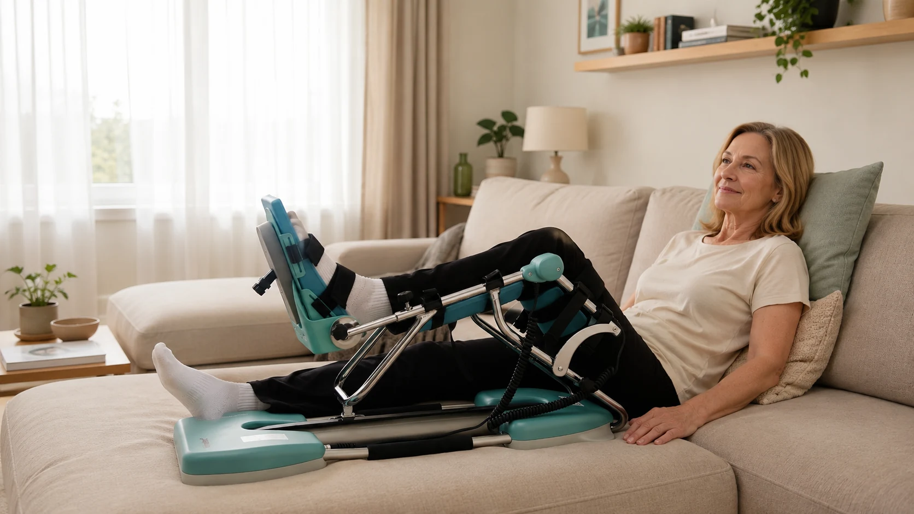

Na een breuk rond de knie werd uw bot vastgezet met schroeven, een plaat of een draadcerclage. Maanden later is de breuk genezen, maar het materiaal geeft last: het schuurt, u voelt de schroefkoppen onder de huid of uw knie wil maar niet verder buigen. De chirurg stelt voor om het materiaal te verwijderen. Een logische vraag volgt dan: moet ik na het verwijderen van schroeven of een plaat uit mijn knie opnieuw met de kinetec oefenen? Het antwoord hangt af van wat er precies tijdens de ingreep gebeurt en hoe goed uw knie vooraf al bewoog. In dit artikel leest u wat u mag verwachten, wanneer de kinetec echt een verschil maakt en hoe u de eerste weken veilig opbouwt.
Kort samengevat
Het verwijderen van osteosynthesemateriaal is meestal een kleinere ingreep dan de oorspronkelijke operatie. U mag vaak snel weer steunen. De kinetec is vooral nuttig wanneer de chirurg tegelijk verklevingen losmaakt of uw knie onder narcose mobiliseert, of wanneer uw knie vooraf stijf was. Het bot op de plaats van de schroeven blijft enkele weken kwetsbaarder, dus springen en zware sport wachten nog even.
Waarom Wordt Materiaal uit de Knie Verwijderd?
Schroeven, platen en draden hebben één taak: de botstukken op hun plaats houden tot de breuk genezen is. Daarna zijn ze eigenlijk overbodig. Veel mensen houden hun materiaal levenslang zonder enig probleem, maar rond de knie zit het vaak vlak onder de huid of dicht bij pezen. Daardoor kiest de chirurg samen met de patiënt soms voor verwijdering. Veelvoorkomende redenen zijn:
- Irritatie of pijn door schroefkoppen of een plaat die tegen pezen, slijmbeurzen of de huid schuurt, bijvoorbeeld bij knielen
- Een draadcerclage na een knieschijfbreuk die bij het buigen prikt of drukt. Meer over die breuk leest u in ons artikel over de kinetec na een patellafractuur
- Een stijve knie, waarbij de chirurg de verwijdering combineert met het losmaken van verklevingen (artrolyse) of een manipulatie onder narcose
- Een plaat na een osteotomie (HTO), die na genezing hinderlijk kan zijn
- Voorbereiding op een latere knieprothese, zodat het materiaal de prothese niet in de weg zit
Typische voorgeschiedenissen zijn een tibiaplateaufractuur, een distale femurfractuur of een osteotomie van de knie. Bij al deze situaties heeft u eerder al een periode van immobilisatie en revalidatie achter de rug.
Heeft u Echt een Kinetec Nodig?
Niet iedereen heeft na een materiaalverwijdering een kinetec nodig. Het verschil zit vooral in twee vragen: hoe goed buigt uw knie vandaag al, en wat doet de chirurg naast het verwijderen van het materiaal?
| Situatie | Kinetec zinvol? | Waarom |
|---|---|---|
| Enkele schroeven verwijderd, knie buigt al vlot voorbij 110° | Meestal niet nodig | Gewone oefeningen en dagelijks bewegen volstaan |
| Plaat verwijderd via een grotere snede, knie buigt rond 90–100° | Te overwegen | Nieuwe wonde en zwelling kunnen de beweeglijkheid tijdelijk terugzetten |
| Materiaal verwijderd plus verklevingen losgemaakt (artrolyse) | Vaak aangeraden | De gewonnen graden moeten vanaf dag 1 vastgehouden worden |
| Materiaal verwijderd plus manipulatie onder narcose | Vaak aangeraden | Zonder intensieve beweging verstijft de knie snel opnieuw |
De laatste twee situaties zijn het belangrijkst. Wanneer de chirurg in de operatiezaal uw knie verder laat buigen dan u zelf kon, is de eerste week na de ingreep doorslaggevend. Het lichaam probeert het losgemaakte littekenweefsel opnieuw aan te leggen. Herhaalde, rustige beweging met de kinetec helpt om dat te voorkomen. Hoe dat precies werkt, leest u in onze artikels over verklevingen in de knie voorkomen en de kinetec na een manipulatie onder narcose.

Voorbeeldschema: Graden Opbouwen na de Ingreep
Het schema hieronder is een voorbeeld voor een patiënt bij wie het materiaal werd verwijderd en tegelijk verklevingen werden losgemaakt. Uw chirurg bepaalt de start- en doelwaarden, vaak op basis van de buiging die in de operatiezaal bereikt werd. Bij een eenvoudige verwijdering gaat de opbouw doorgaans sneller.
30–60 min
volgens pijn
uit de operatiezaal
actieve oefeningen
Begin elke sessie met een paar cycli in een comfortabel bereik en verhoog daarna pas. Een licht trekkend gevoel op het einde van de beweging is normaal; scherpe pijn niet. Vergeet ook de strekking niet: zet het minimum op 0° zodra dat comfortabel lukt. Meer over het instellen van graden en snelheid vindt u in ons kinetec-gebruiksschema in graden per dag.
Uw Bot Heeft Nog Even Bescherming Nodig
Een punt dat veel patiënten onderschatten: waar een schroef of plaat zat, blijven lege gaatjes in het bot achter. Die vullen zich in de loop van enkele weken tot maanden opnieuw met bot. Tot dan is het bot op die plaatsen iets zwakker dan normaal. Daarom geldt meestal:
- Gewoon stappen en dagelijkse activiteiten mag u vaak al na enkele dagen, soms met krukken in het begin
- Springen, lopen en contactsporten worden doorgaans 6 tot 12 weken uitgesteld, afhankelijk van het materiaal en de plaats
- Een val of draaibeweging met volle kracht probeert u in die periode te vermijden
De kinetec zelf is veilig voor het bot: het toestel beweegt uw knie passief en zonder belasting. Fietsen op een hometrainer zonder of met lage weerstand is meestal een goede volgende stap zodra de wonde rustig is en uw knie voldoende buigt.
Let op: de wonde komt eerst
Na een materiaalverwijdering wordt vaak door het oude litteken gesneden. Controleer na elke kinetec-sessie of de wonde niet gaat lekken of openwijken. Leg de steunen niet op de snede en houd het verband droog. Onze tips over de kinetec en wondzorg bij hechtingen of nietjes gelden hier ook.
Pijn en Zwelling in de Eerste Week
Ook al is de ingreep kleiner, uw knie reageert met zwelling en wat pijn. Zeker wanneer verklevingen werden losgemaakt, kan de eerste week pittig zijn. Enkele tips om de sessies vol te houden:
- Neem uw pijnstilling op tijd, ongeveer 30 tot 45 minuten voor de sessie. Lees ook ons artikel over pijnstillers en de kinetec.
- Koel na de sessie, 15 tot 20 minuten, altijd met een doek tussen ijs en huid.
- Leg het been hoog tussen de sessies, met de knie gestrekt en zonder kussen in de knieholte.
- Spreid de sessies over de dag in plaats van één lange sessie te doen.
Neem contact op met uw arts bij:
- Koorts boven 38,5°C of een rode, warme en steeds pijnlijkere knie
- Etter of troebel vocht uit de wonde
- Pijn en zwelling in de kuit, zeker met een warm onderbeen
- Plotse hevige pijn na een misstap of val, of een been dat u niet meer kunt belasten
Tips om het Maximum uit de Ingreep te Halen
- Vraag uw chirurg naar de bereikte buiging in de operatiezaal. Dat getal is uw doel voor de komende weken.
- Regel de kinetec vóór de ingreep, zodat het toestel klaarstaat wanneer u thuiskomt. De eerste dagen tellen het meest.
- Combineer met actieve oefeningen. Spanningsoefeningen voor de dijspier houden uw strekking en kracht op peil. Zie ons artikel over quadriceps-activatie na een knieoperatie.
- Meet uw vooruitgang. Noteer elke dag de maximale hoek. Zo ziet u snel of u vooruitgaat of stilstaat.
Kinetec Huren bij PhysioVisit
Bij PhysioVisit huurt u een professionele kinetec CPM-machine voor €17 per dag. We leveren en installeren het toestel overal in België, stellen het in volgens het protocol van uw chirurg en halen het weer op wanneer u klaar bent. Na een materiaalverwijdering is de huurperiode meestal korter dan na de oorspronkelijke breuk, vaak twee tot vier weken.
Woont u in de regio Grimbergen, Strombeek-Bever, Humbeek, Beigem of Koningslo? Dan volgt onze kinesitherapeut uw revalidatie ook thuis op via kinesitherapie aan huis. Voor de fase na de kinetec kunt u bij ons ook een hometrainer huren voor €2 per dag.
Over de terugbetaling
De terugbetaling van een kinetec verloopt via uw verzekering, niet via de mutualiteit. Wij bezorgen u een factuur die u indient. Sommige polissen betalen alles terug, andere de helft of een beperkt bedrag. Vraag dit altijd na bij uw eigen verzekeraar. Meer uitleg vindt u in ons artikel over de kinetec terugbetaling in België.
Veelgestelde Vragen over Materiaalverwijdering en de Kinetec
Kinetec Nodig na uw Ingreep?
Wij leveren en installeren uw kinetec aan huis in heel België, zodat het toestel klaarstaat wanneer u thuiskomt. Vanaf €17/dag.
Conclusie
Het verwijderen van schroeven of een plaat uit de knie is meestal een kleinere ingreep met een sneller herstel dan de oorspronkelijke operatie. Of u een kinetec nodig heeft, hangt vooral af van hoe goed uw knie vooraf al buigt en of de chirurg tegelijk verklevingen losmaakt of uw knie onder narcose mobiliseert. In die laatste gevallen zijn de eerste weken met de kinetec cruciaal om de gewonnen graden te behouden. Spaar intussen uw bot: de lege schroefgaatjes hebben enkele weken nodig om weer stevig te worden.
Twijfelt u of de kinetec in uw situatie zinvol is, of wilt u het toestel al laten klaarzetten voor uw ingreep? Neem gerust contact met ons op. Lees ook hoe u een stijve knie of artrofibrose voorkomt.